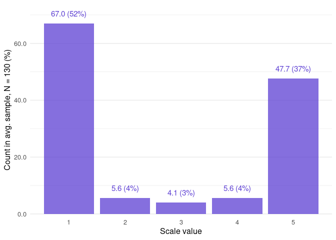

The goal of unsum is to undo summarization: reconstruct all possible samples that may underlie a given set of summary statistics. It is currently implemented for sets of mean, SD, sample size, and scale bounds. This can be useful in error detection to identify impossible or implausible reported numbers.
The package features CLOSURE: Complete Listing of Original Samples of Underlying Raw Evidence, a fast algorithm implemented in Rust.
CLOSURE is exhaustive, which makes it computationally intensive. If your code takes too long to run, consider using SPRITE instead (see Previous work below).
Installation
You can install the development version of unsum from GitHub with either of these:
remotes::install_github("lhdjung/unsum")
# or
pak::pak("lhdjung/unsum")Your R version should be 4.2.0 or more recent. To run unsum, you also need a Rust installation; see vignette("install-rust").
Get started
Start with closure_combine(), the package’s main function. It creates all possible samples:
library(unsum)
data <- closure_combine(
mean = "2.7",
sd = "1.9",
n = 130,
scale_min = 1,
scale_max = 5
)
data
#> $inputs
#> # A tibble: 1 × 5
#> mean sd n scale_min scale_max
#> <chr> <chr> <dbl> <dbl> <dbl>
#> 1 2.7 1.9 130 1 5
#>
#> $metrics
#> # A tibble: 1 × 5
#> combos_initial combos_all values_all horns horns_uniform
#> <int> <int> <int> <dbl> <dbl>
#> 1 15 5359 696670 0.881 0.5
#>
#> $frequency
#> # A tibble: 5 × 4
#> value f_average f_absolute f_relative
#> <int> <dbl> <int> <dbl>
#> 1 1 67.0 358972 0.515
#> 2 2 5.63 30170 0.0433
#> 3 3 4.09 21940 0.0315
#> 4 4 5.63 30162 0.0433
#> 5 5 47.7 255426 0.367
#>
#> $results
#> # A tibble: 5,359 × 2
#> id combination
#> <int> <list>
#> 1 1 <int [130]>
#> 2 2 <int [130]>
#> 3 3 <int [130]>
#> 4 4 <int [130]>
#> 5 5 <int [130]>
#> 6 6 <int [130]>
#> 7 7 <int [130]>
#> 8 8 <int [130]>
#> 9 9 <int [130]>
#> 10 10 <int [130]>
#> # ℹ 5,349 more rowsVisualize the overall distribution of values found in the combinations:
closure_plot_bar(data)
Previous work
SPRITE generates random datasets that could have led to the reported statistics. CLOSURE is exhaustive, so it always finds all possible datasets, not just a random sample of them. For the same reason, SPRITE runs fast when CLOSURE may take too long.
GRIM and GRIMMER test reported summary statistics for consistency, but CLOSURE is the ultimate consistency test: if it finds at least one distribution, the statistics are consistent; and if not, they cannot all be correct.
CORVIDS deserves credit as the first technique to reconstruct all possible underlying datasets. However, it takes very long to run, often prohibitively so. This is partly because the code is written in Python, but the algorithm is also inherently much more complex than CLOSURE.
About
The CLOSURE algorithm was originally written in Python by Nathanael Larigaldie. The R package unsum provides easy access to an optimized implementation in Rust, closure-core, via the amazing extendr framework. Rust code tends to run much faster than R or Python code, which is required for many applications of CLOSURE.